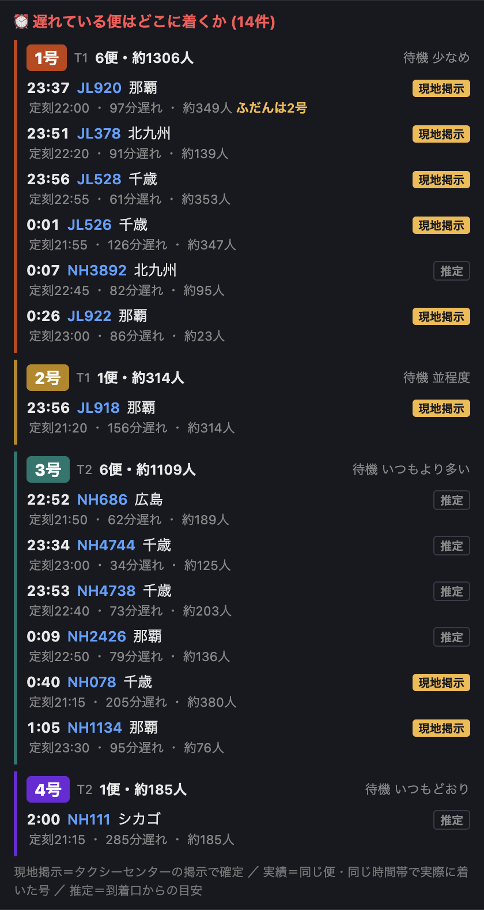

ご依頼の件です。これまでの「大幅遅延便情報」は便を時刻順に並べるだけで、深夜に乗り場を選ぶときに知りたいどの号に行けばいいかが読み取れませんでした。号を見出しにしてまとめ直し、号の根拠（現地掲示／実績／推定）を1便ずつ明記しました。

現地掲示で乗り場が確定した便と、アプリの静的推定（到着口から割り出す号）を突き合わせました。
| 突合できた便 | 推定と一致 | 推定と食い違い |
|---|---|---|
| 27便 | 21便（78%） | 6便（22%） |
出典: 現地掲示の履歴（2026-06-26〜08-07）× 当時アプリが配信していた arrivals.json をgit履歴から復元して突合。
しかも食い違いは必ず同じターミナルの隣の号どうしでした。
| 食い違いの向き | 件数 | 意味 |
|---|---|---|
| 1号 ⇄ 2号 | 3件 | T1の中で入れ替わる |
| 3号 ⇄ 4号 | 3件 | T2の中で入れ替わる |
号ごとに材料を並べるだけで、「◯号がおすすめ」とは言いません（乗り場カードと同じ方針）。
テストが緑になった後、掲示が14便出ていた夜（2026-06-26）を丸ごと再生しました。そこで初めて分かったことです。
掲示に載っている便の多くは「遅れ30分未満」でした。旧来の「大幅遅延＝30分以上」で切ると、確定した掲示の便が全部落ち、推定の便だけが残るという逆転が起きていました。再生すると8便中1便しか出ない状態でした。
→ 掲示に載っている便は遅れ幅に関係なく必ず拾うよう修正。1便 → 14便に。
掲示の号を反映する処理が、推定と違うときだけ「掲示由来」の印を立てていました。一致しているときは印が無いので、後段から「掲示に載っている便」を見分けられませんでした。これが欠陥Aの直接の原因です。
24:07、掲示は 0:01。同じ一覧に混ざると読めないので時計表記に統一。| 項目 | 内容 |
|---|---|
| 変わる画面 | 到着便ページの「大幅遅延便情報」ブロックのみ（号別ガイドに置き換え） |
| 変わらないもの | 乗り場の状況カード、便一覧、ヒートマップ、集計、日報側は一切変更なし |
| ターミナルタブ | ガイドはタブに依存しない（号1〜4はT1/T2をまたぐため。上の乗り場カードと同じ扱い） |
| テスト | 到着便まわり 87緑（+23本追加）／全体 1026緑 |
| 既存の落ち | 1件 home-calendar-roster-day-off はこの変更と無関係（手を付けていない main でも同じく落ちることを確認済み） |
| 実データ検証 | 掲示ありの夜（14便）と掲示なしの現在データ、両方で描画まで通して確認 |
まずdevで実物を見てから決めていただくのが安全です。コマンドはそのまま貼れます。
dev に上げて実機で見る（推奨）
下のコマンドを実行 → dev の到着便ページで見た目を確認。良ければ本番出荷を指示してください。
!~/work/taxi-dev/dpush.sh ~/work/taxi-delay-lane
dev を飛ばして本番へ
深夜の掲示が出ている時間に間に合わせたい場合。実データ再生は済んでいますが、実機での見た目確認は本番が初になります。
表示を直してから上げる
気になる点（言葉づかい・出す順番・情報量）を教えてください。直してから上げます。